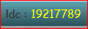

Indicateurs
Il y a deux indicateurs en permanence visibles dans le bandeau supérieur de l'application :
- Activité des fichiers Pic : Permet de savoir si le traitement des fichiers pic est en cours. pour oui et pour non.
- Nombre de lignes de code : Affiche le nombre de lignes de code présentes dans le serveur SonarQube. La limite de license est fixée à 20M de lignes.
